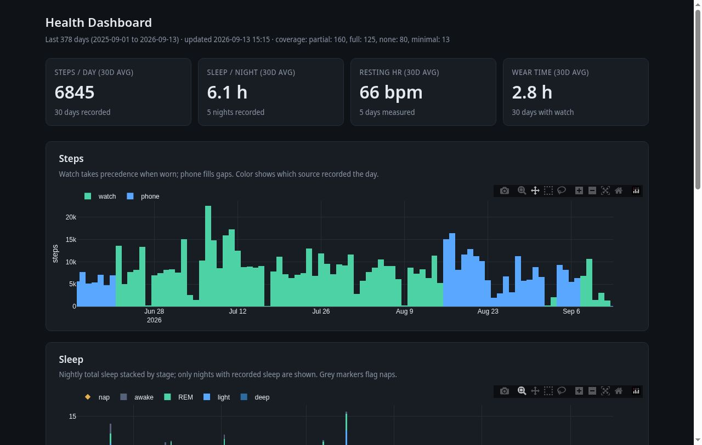
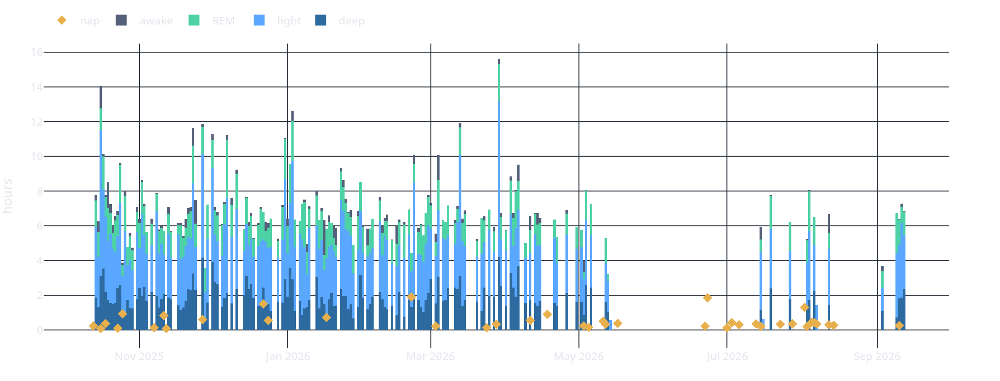
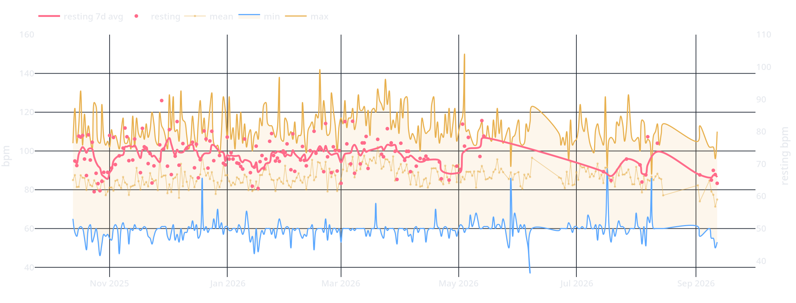
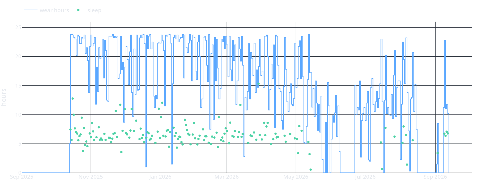

A personal health-data pipeline on a Raspberry Pi
—title: A personal health-data pipeline on a Raspberry Pidescription: ’From Google Drive CSV exports to a tidy dataset and a self-contained Plotly dashboard: the data-engineering decisions that matter when the subject is one person and the data is messy.’date: ’2026-09-13’categories:- Engineering Notesdraft: truecap-location: marginjupyter: kernelspec: display_name: Python 3 (main) language: python name: main—I wear a smartwatch and carry a phone, and both track my health data, which syncs to Google Drive every morning as CSV exports. This post describes the pipeline I built to turn those exports into something analyzable: a tidy one-row-per-day dataset and a self-contained dashboard, rebuilt daily on a Raspberry Pi. The repository is at github.com/tpaixao/health_sync_data.

## 1. The data model was the hard partTwo sources record overlapping signals: a Huawei Health watch and Health Connect (phone). Steps come from both; heart rate and sleep only from the watch. The exports arrive as one rolling 30-day file per day, which means each calendar day appears in about thirty overlapping files, and the naive aggregation is wrong: summing across files produces 478,000-step days. The correct operation is to take the maximum per-day value across files, then deduplicate between sources with watch-wins precedence and phone filling gaps.This is the least glamorous part of the project and the part with the most permanent consequences. Decisions like “take the max, never the sum” or “watch wins” are encoded once in the loader and silently determine every number the dashboard will ever show.## 2. Missing data is information, not zeroA single-subject dataset has no sampling variability to hide behind: the wearer takes the watch off, forgets it at home, charges it. The design rules reflect that:- No zero-filling or interpolation for heart rate and sleep on unworn days; those days are missing values, not zero values.- Each day carries a coverage class (full, partial, minimal, none), so any downstream aggregation can restrict to observed days explicitly.- Trends are computed over recorded days only; the stat cards in the dashboard state their denominator (“5 nights recorded”, “30 days with watch”).The result is honest by construction: 378 days of data, of which 125 have full coverage and 80 have none. Zero-filling would have silently converted “watch not worn” into “slept zero hours”.## 3. A static dashboard is enoughThe dashboard is a single HTML file, regenerated daily from the tidy CSV embedded as in-page JSON, with Plotly loaded from CDN and all rendering client-side. No server, no database, no JavaScript build step. Charts pan by dragging horizontally with the y-axis locked, which makes time series pleasant to browse on a phone.

The daily rebuild runs from cron fifteen minutes after the Drive sync, and reports success or failure. Because the dashboard is a build artifact rather than a service, there is nothing to keep alive and nothing to break beyond the cron job itself.
## 4. What the data says (and does not)A year in, the honest findings are modest. Sleep duration and heart rate are essentially uncorrelated in this dataset (r near zero, n=157), so the sleep-versus-HR cross-plot is not informative. Resting heart rate computed from the low decile of sleep-window samples behaves sensibly and is the closest available recovery signal, since these exports contain minute-level heart rate only, no beat-to-beat intervals, and therefore no real HRV.That last point is worth stating plainly: consumer exports decide for you what is measurable. The data schema is the ceiling of the analysis, not the watch’s sensing capability.## Take-home messages- Rolling export files demand max-based deduplication; summing across overlapping files fabricates data.- For single-subject data, encode missingness explicitly (coverage classes, NA for unworn days) instead of zero-filling; every downstream number depends on this.- A static, self-contained dashboard rebuilt daily is the right complexity for personal analytics: no services to babysit.- Consumer health exports define the analysis ceiling; no RR intervals means no HRV, regardless of what the marketing says.## References- Pipeline repository: github.com/tpaixao/health_sync_data